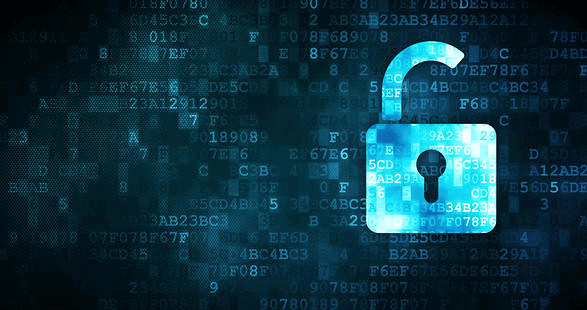

2. Bias and Discrimination Perpetuated by AI
Artificial intelligence has the potential to revolutionize many aspects of our lives, from healthcare to transportation to education. However, as with any powerful tool, there is also the potential for harm if AI is not developed and used responsibly.
One of the most concerning issues with AI is the perpetuation of bias and discrimination. AI systems are only as unbiased as the data they are trained on, and unfortunately, many datasets contain biases that reflect historical injustices and prejudices.
For example, facial recognition software has been shown to have higher error rates for people with darker skin tones and for women, which can have serious implications for individuals who are falsely identified or not identified at all.
It is important for developers and users of AI to be aware of these biases and to work to mitigate them. This can involve using more diverse datasets, employing ethical standards in the development and deployment of AI, and ongoing monitoring and testing to identify and address any biases that may arise.
3. Autonomous weapon system
An autonomous weapon system is a type of artificial intelligence that can select and engage targets without human intervention. These systems can include drones, robots, and other military equipment.
While some argue that autonomous weapon systems can increase military efficiency and reduce casualties, others are concerned about the potential dangers of these systems. There are concerns about the possibility of malfunction or hacking, as well as ethical issues surrounding the use of lethal force without human oversight.
The Future of Autonomous Weapon Systems
The development and use of autonomous weapon systems is a topic of ongoing debate and controversy. Some countries have called for a ban on these systems, while others are continuing to invest in their development.
As we continue to explore the potential dangers of artificial intelligence, it's important to consider the implications of autonomous weapon systems and their impact on society and international relations.
4. Job Displacement and Economic Inequality
As artificial intelligence continues to advance, many worry about the impact it will have on the workforce. While AI has the potential to create new jobs and industries, it also has the potential to displace workers in existing industries, leading to economic inequality.
Studies have shown that AI is already displacing workers in certain industries, such as manufacturing and transportation. As AI becomes more advanced, it could also replace workers in industries such as finance, healthcare, and education.
This displacement could exacerbate economic inequality, as workers in lower-paying jobs are more likely to be displaced by AI than those in higher-paying jobs. This could lead to a further concentration of wealth and power among the elite, while leaving many others struggling to make ends meet.
It is important for policymakers, businesses, and individuals to consider the potential impacts of AI on the workforce and to take steps to mitigate any negative effects. This could include investing in education and retraining programs, providing a basic income to those displaced by AI, and implementing regulations to ensure that AI is used in a way that benefits society as a whole.
5. AI Concerning Privacy
Artificial Intelligence (AI) has the potential to greatly improve our lives, but it also poses a serious threat to our privacy. With the increasing use of AI in various industries, there is a growing concern about how our personal data is being collected, stored, and used.

AI algorithms are designed to analyze massive amounts of data to identify patterns and make predictions, which can be incredibly useful for businesses and governments. However, this also means that our personal information is being collected and analyzed without our knowledge or consent.
Surveillance
One of the biggest concerns is the use of AI for surveillance purposes. Governments and private companies can use AI to monitor and track individuals, potentially leading to a loss of privacy and freedom.

There are also concerns about how AI can be used to manipulate our behavior and influence our decisions. For example, AI algorithms can be used to personalize advertisements or recommendations based on our online activity, which can lead to us being trapped in filter bubbles and echo chambers.
It is important for individuals and organizations to be aware of these issues and take steps to protect our privacy. This includes using privacy-enhancing technologies, being cautious about sharing personal information online, and advocating for stronger privacy laws and regulations.
6. AI's role in exacerbating global system
AI has been lauded as a tool that can help solve some of the world's most pressing problems, from climate change to economic inequality. However, there are also concerns that AI could exacerbate existing problems and create new ones.
The risks of AI in exacerbating global systems
One of the biggest risks of AI in exacerbating global systems is its potential to increase inequality. AI has the ability to automate many jobs, which could lead to job losses and wage stagnation for many workers. This could exacerbate existing inequalities and create new ones, particularly in developing countries where job opportunities are already scarce.
Another risk is the potential for AI to perpetuate and even amplify biases. AI algorithms are only as good as the data they are trained on, and if that data is biased, then the AI will be biased as well. This could lead to discriminatory outcomes in areas such as hiring, lending, and criminal justice.
Possible solutions to mitigate these risks
To mitigate the risks of AI in exacerbating global systems, it is important to develop and implement policies that promote fairness and equality. This could include measures such as:
- Investing in education and training programs to help workers acquire the skills they need to thrive in an AI-driven economy
- Ensuring that AI algorithms are transparent and accountable, and that they are audited regularly to check for biases
- Encouraging diversity in AI development teams to help mitigate the risk of biases in the data and algorithms
- Implementing regulations and standards to ensure that AI is used in ways that benefit society as a whole, rather than just a select few
By taking these and other measures, we can help ensure that AI is used in ways that promote fairness, equality, and social progress, rather than exacerbating existing problems and creating new ones.
7. Regulation and privacy
As artificial intelligence becomes more integrated into our daily lives, concerns over privacy are becoming more prevalent. With AI's ability to process vast amounts of personal data, the potential for misuse and abuse of this data is a real threat.
Regulation is one way to address these concerns. Governments and regulatory bodies around the world are grappling with the challenges of creating frameworks that balance innovation and privacy protection. For example, the European Union's General Data Protection Regulation (GDPR) is one of the most comprehensive privacy regulations in the world, and it sets standards for how personal data should be collected, processed, and stored.
However, regulation alone may not be enough. Technology companies and AI developers also have a responsibility to prioritize user privacy and transparency. This means building privacy protections into their AI systems from the ground up, and being transparent about how personal data is being collected and used.
Ultimately, the regulation and protection of privacy in the age of AI is a complex issue that requires collaboration and innovation from all stakeholders. By working together, we can create a future in which AI and privacy can coexist in harmony.
Conclusion
After exploring the potential dangers of artificial intelligence, it is clear that there are many ethical and societal concerns that need to be addressed as AI continues to advance.
One of the key issues that needs to be addressed is privacy. As AI becomes more sophisticated, it will have the ability to collect and analyze vast amounts of personal data. It is important that individuals have control over their personal data and that companies are transparent about how they are using this data.
Another issue is the potential for AI to perpetuate and amplify existing biases and inequalities. It is important that AI is developed in a way that promotes fairness and equality for all individuals, regardless of race, gender, or socioeconomic status.